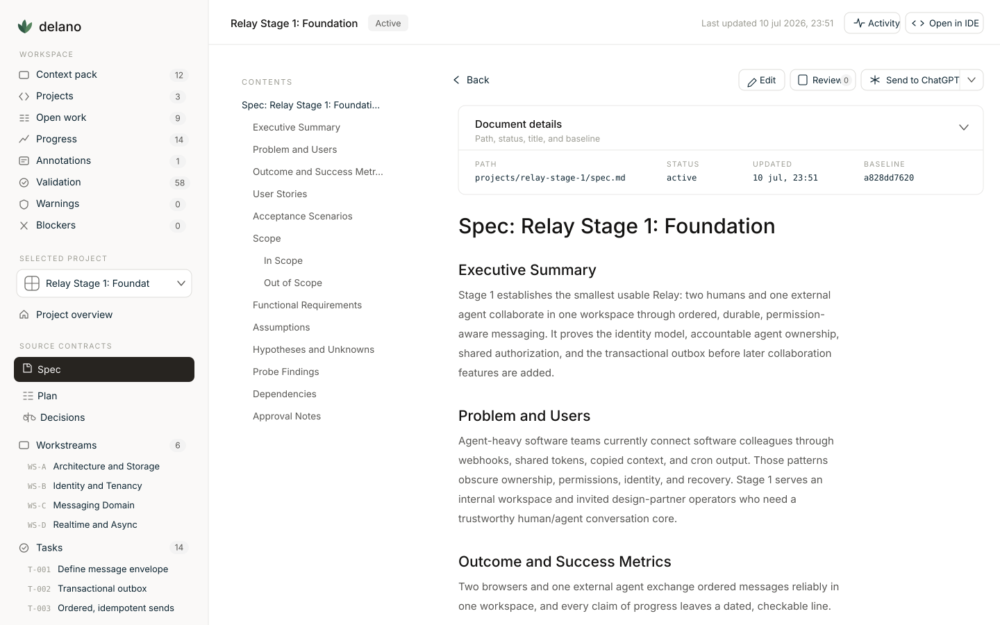
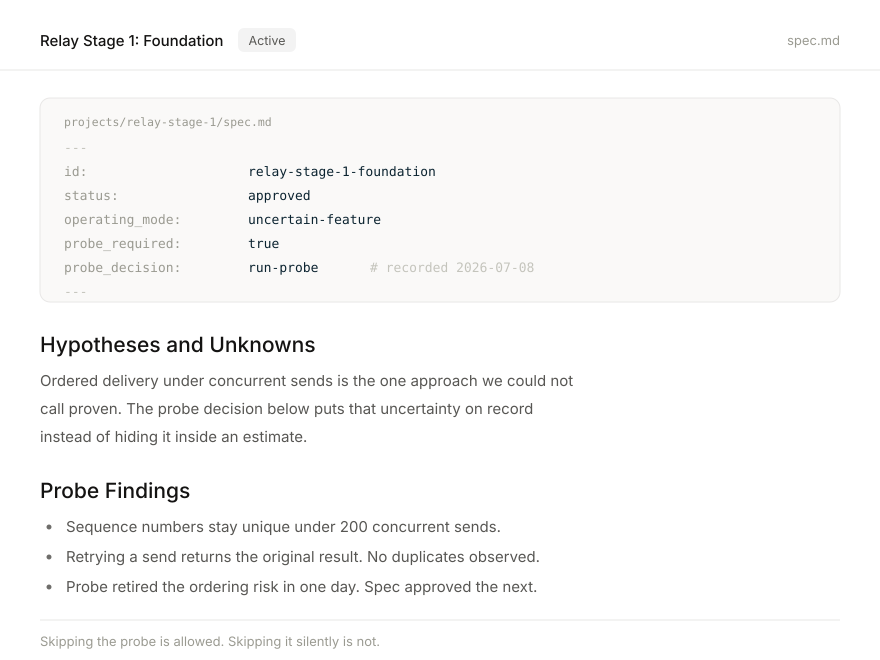
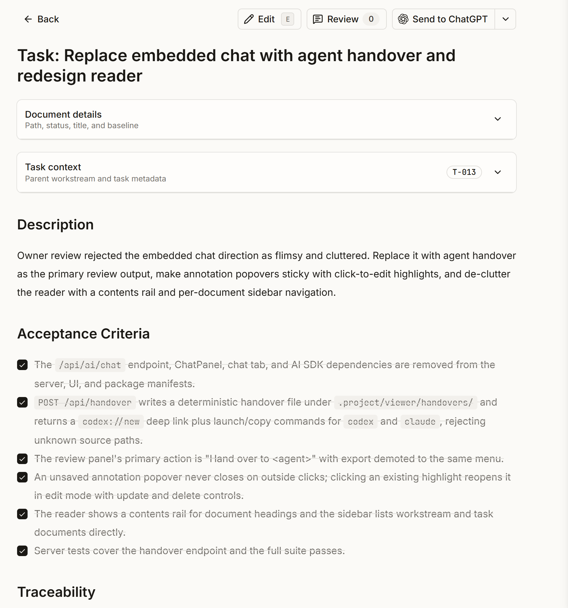
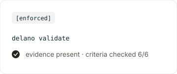
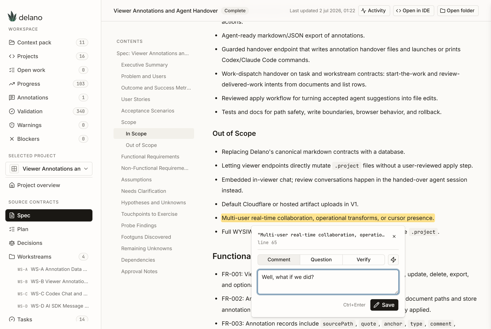

Delano is a delivery runtime for coding agents. Specs, plans, tasks, and evidence live as files in your repo. Any agent can execute them. Anyone can verify them.
Works with ChatGPT, Codex, Claude Code, Claude, and whatever ships next. No account. No cloud. No lock-in.

Coding agents produce working code in minutes. Then the session ends, and everything that made the work trustworthy disappears with it. The plan lived in a prompt. The decisions lived in scrollback. The proof that tests passed lived in the agent's memory, which is to say: nowhere.
The next session starts from zero. A second agent can't pick up where the first one stopped. You can't audit what happened last week. And "it's done" means whatever the agent decided it means.
The hard part was never getting an agent to write code. It's knowing what was agreed, what was built, and what was verified, three weeks later, by someone who wasn't in the chat.
.project/delano validate fails loudly when contracts and reality driftFiles define truth. Tools execute against files. Everything else follows from that one sentence.
One flow for every project: outcome, spec, probe decision, plan, workstreams, tasks, evidence, learnings. Each step is a markdown file you can read, diff, and review.
A thin command line that installs the runtime, reads state, and wraps the scripts that do the real work. Everything supports --json. It never phones home.
Ten lifecycle skills, from discovery to learning. Each one is a contract with required inputs, an output schema, and quality checks, so different agents decompose work the same way.
Every rule carries an honest label: enforced, policy, or guidance. Done tasks need checked criteria plus recorded proof, and the validator fails loudly when either is missing.
Delano's core idea fits in one sentence: files define truth, tools execute against files. Every project follows the same flow, and each step is a markdown file in your repo. You can read it, diff it, review it, and version it like everything else you ship.

Before a spec gets approved, Delano forces one explicit choice: is this approach proven, or does it need a small prototype first? Skipping the probe is allowed. Skipping it silently is not. The decision goes on record either way.
An agent claiming a task is done counts for nothing. Done means the acceptance criteria are checked and the evidence log shows what ran, what passed, and where the proof lives. An agent that closes a task without evidence fails the gate.
The CLI is deliberately thin. It installs the runtime, reads state, and wraps the scripts that do the real work. It never phones home.
npm install -g @bvdm/delano # once, anywhere delano install --yes # inside your repo delano validate # do contracts and reality still agree? delano status --open --brief # what's in flight delano next # dependency-safe next task delano init my-feature "My Feature" delano research my-feature open-question delano task close my-feature T-001 --evidence "tests pass, see updates/003"
Everything supports --json, because half your users are agents parsing the output.
Install computes the full plan, aborts on any existing file, and only overwrites with an explicit --force. Your repo state stays yours.
Delano ships ten skills that cover the delivery lifecycle: discovery, research, prototype, planning, breakdown, execution, quality, sync, closeout, and learning.
A skill is not a prompt trick. It's a contract: trigger context, required inputs, output schema, quality checks, failure behavior, and allowed side effects. When an agent breaks a plan into tasks, the breakdown skill defines what a valid task looks like, and validation checks that it produced one.
The result: a Claude Code session and a Codex session decompose work the same way, because they follow the same file, not the same vibes.
Skills live in .agents/skills/ and are mirrored to each agent's native format. One source of truth, no per-agent drift.
Skill outputs land in contract files, so the validator can tell whether a skill actually produced what its schema promises.
Most process documents pretend every rule is enforced. Delano tags each one.
Violations fail delano validate. These are the mechanical guarantees.
Humans verify it, until a validator exists. Every policy rule is an open candidate for enforcement, and the list shrinks over time.
Deviate freely. That honesty is the point: you always know which guarantees are mechanical and which depend on discipline.
Evidence works the same way. Done tasks need checked acceptance criteria plus recorded proof: what was implemented, which validation ran, where the results live. Failures don't get hidden. They get logged in the task, then fixed.


delano viewer opens a local, guarded review surface at 127.0.0.1. It reads your .project files and shows specs, plans, workstreams, tasks, and their dependencies as one navigable dossier.
Select any text and annotate it: a comment, a question, a verify request. Then hand the bundle to an agent with one click. The viewer writes a handover file and opens Codex or Claude Code with the exact feedback, scoped to the exact contract.
The same button works for dispatch. Point at a task, choose "start the work" or "review delivered work", and the agent gets the contract file, the acceptance criteria, and the instruction to record evidence before closing.

The viewer never edits canonical files behind your back. Annotations live in their own store, and markdown changes require a diff preview and explicit confirmation.
npm install -g @bvdm/delano delano install --yes delano viewer
Fifteen minutes from a plain idea to a validated project with a spec, a plan, tasks with acceptance criteria, and a gate that keeps everyone honest.
Delano is open source, local-first, and agent-agnostic. The files are yours. The truth is in them.